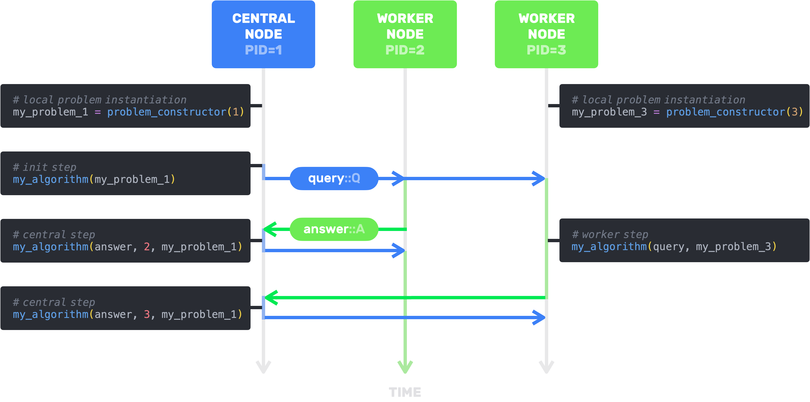

AsynchronousIterativeAlgorithms.jl
🧮 AsynchronousIterativeAlgorithms.jl handles the distributed asynchronous communications, so you can focus on designing your algorithm.
💽 It also offers a convenient way to manage the distribution of your problem's data across multiple processes or remote machines.
Installation
You can install AsynchronousIterativeAlgorithms by typing
julia> ] add AsynchronousIterativeAlgorithmsQuick start
Say you want to implement a distributed version of Stochastic Gradient Descent (SGD). You'll need to define:
- an algorithm structure subtyping
AbstractAlgorithm{Q,A} - the initialization step where you compute the first iteration
- the worker step performed by the workers when they receive a query
q::Qfrom the central node - the asynchronous central step performed by the central node when it receives an answer
a::Afrom aworker

Let's first of all set up our distributed environment.
# Launch multiple processes (or remote machines)
using Distributed; addprocs(5)
# Instantiate and precompile environment in all processes
@everywhere (using Pkg; Pkg.activate(@__DIR__); Pkg.instantiate(); Pkg.precompile())
# You can now use AsynchronousIterativeAlgorithms
@everywhere (using AsynchronousIterativeAlgorithms; const AIA = AsynchronousIterativeAlgorithms)Now to the implementation.
# define on all processes
@everywhere begin
# algorithm
mutable struct SGD<:AbstractAlgorithm{Vector{Float64},Vector{Float64}}
stepsize::Float64
previous_q::Vector{Float64} # previous query
SGD(stepsize::Float64) = new(stepsize, Float64[])
end
# initialisation step
function (sgd::SGD)(problem::Any)
sgd.previous_q = rand(problem.n)
end
# worker step
function (sgd::SGD)(q::Vector{Float64}, problem::Any)
sgd.stepsize * problem.∇f(q, rand(1:problem.m))
end
# asynchronous central step
function (sgd::SGD)(a::Vector{Float64}, worker::Int64, problem::Any)
sgd.previous_q -= a
end
endNow let's test our algorithm on a linear regression problem with mean squared error loss (LRMSE). This problem must be compatible with your algorithm. In this example, it means providing attributes n and m (dimension of the regressor and number of points), and the method ∇f(x::Vector{Float64}, i::Int64) (gradient of the linear regression loss on the ith data point)
@everywhere begin
struct LRMSE
A::Union{Matrix{Float64}, Nothing}
b::Union{Vector{Float64}, Nothing}
n::Int64
m::Int64
L::Float64 # Lipschitz constant of f
∇f::Function
end
function LRMSE(A::Matrix{Float64}, b::Vector{Float64})
m, n = size(A)
L = maximum(A'*A)
∇f(x) = A' * (A * x - b) / n
∇f(x,i) = A[i,:] * (A[i,:]' * x - b[i])
LRMSE(A, b, n, m, L, ∇f)
end
endWe're almost ready to start the algorithm...
# Provide the stopping criteria
stopat = (iteration=1000, time=42.)
# Instanciate your algorithm
sgd = SGD(0.01)
# Create a function that returns an instance of your problem for a given pid
problem_constructor = (pid) -> LRMSE(rand(42,10),rand(42))
# And you can [start](@ref)!
history = start(sgd, problem_constructor, stopat);